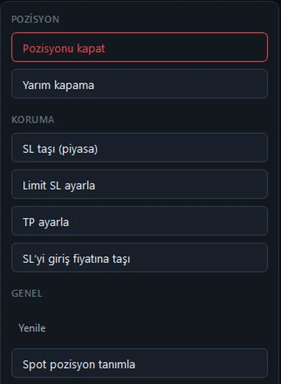

Открытые позиции
Отслеживание открытых позиций
Управляйте позициями, открытыми по сигналам, на одном экране: закрыть, закрыть половину, перенести SL, задать TP. Стоп-лоссы и тейк-профиты отправляются и на биржу.

Реальный экран приложения, снят в виртуальном режиме.
Каждый момент позиции — по правилам
От открытия до закрытия защита работает по вашим настройкам.
Сигнал — позиция открыта
При появлении сигнала позиция открывается в виртуальном или реальном режиме по вашим настройкам. В реальном режиме SL и TP сразу выставляются на бирже.
- Только спот, гибридный или только фьючерсы
- Плечо 1x, 2x, 3x, 5x, 10x и 20x
- Если свободного баланса не хватает, позиция не открывается

Действия в один клик
С панели справа можно закрыть выбранную позицию, закрыть половину или изменить её защиту.
- Закрыть позицию и закрыть половину
- Перенос SL к рынку, лимитный SL и TP
- Перенос SL на вход и закрыть все

Защита прибыли и ограничение риска
Трейлинг-стоп и безубыток помогают защищать прибыль; дневной лимит убытка, максимум позиций и максимальная длительность ограничивают риск.
- Позиция закрывается автоматически по истечении времени
- Если биржа отклоняет новый стоп, сохраняется прежний
- Записи регулярно сверяются с биржей

Что есть в управлении позициями?
Защитные ордера и в приложении, и на бирже.
SL/TP на бирже
Стоп-лосс и тейк-профит выставляются на бирже и остаются там даже при закрытом приложении.
Трейлинг-стоп
Уровень стопа следует за ценой, когда она движется в вашу сторону.
Безубыток
Перенос стопа на цену входа снижает риск превращения прибыльной сделки в убыточную.
Время и лимиты
Максимальная длительность, максимум открытых позиций и дневной лимит убытка.
Только свои позиции
Работает с ордерами с префиксом «SX»; не трогает позиции другого бота или ваши собственные.
Сверка позиций
Закрытые на бирже позиции закрываются в записях, недостающая защита по возможности восстанавливается.
Частые вопросы
Работают ли SL и TP при закрытом приложении?
В реальном режиме ордера SL и TP отправляются и на биржу, поэтому остаются там при закрытом приложении.
Трогает ли он позиции, открытые вручную?
Нет. Sentralyx управляет только позициями, которые открыл сам, и своими ордерами с префиксом «SX».
Всегда ли стоп исполняется точно по цене?
Нет. При резких движениях цены стоп-ордера могут исполниться хуже из-за проскальзывания.
Связанные страницы
Проверьте стратегию в виртуальном режиме уже сегодня
Скачайте приложение, соберите стратегию и посмотрите, как она работает, без реальных денег.